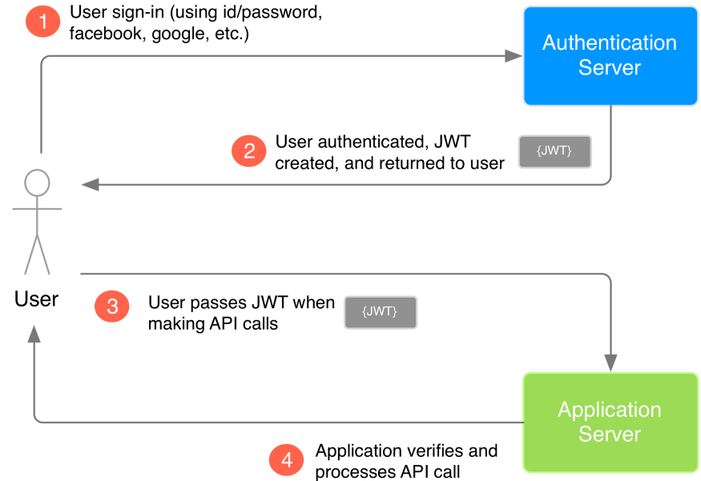

HTTP — протокол передачі даних, що використовується в комп'ютерних мережах. Назва скорочена від Hyper Text Transfer Protocol, протокол передачі гіпер-текстових документів
HTTP specification specifies how clients request data will be constructed and sent to the server, and how servers respond to these requests.
URL stands for Uniform Resource Locator.
Internet Protocol - IP.
The domain name servers(DNS) keep tables of machine names and their IP addresses.
80 port.

The HTTP client sends a request to the server in the form of a request method, URI, and protocol version, followed by a MIME-like message containing request modifiers, client information, and possible body content over a TCP/IP connection.
The HTTP server responds with a status line, including the message's protocol version and a success or error code, followed by a MIME-like message containing server information, entity metainformation, and possible entity-body content.
The HTTP client ie. browser initiates an HTTP request and after a request is made, the client disconnects from the server and waits for a response. The server process the request and re-establish the connection with the client to send response back.
Any type of data can be sent by HTTP as long as both the client and server know how to handle the data content.
The server and client are aware of each other only during a current request. Afterwards, both of them forget about each other.
A general syntax of URI:
URI = "http:" "//" host [ ":" port ] [ abs_path [ "?" query ]]
http://abc.com:80/~smith/home.html
All HTTP date/time stamps MUST be represented in Greenwich Mean Time (GMT).
US-ASCII - default character set.
A content ecoding values indicate an encoding algorithm has been used to encode the content before passing it over the network.
Accept-encoding: gzip
Accept: image/gif //media types
en, en-US, en-cockney, i-cherokee, x-pig-latin //language tags
HTTP is based on client-server architecture model and a stateless request/response protocol that operates by exchanging messages across a reliable TCP/IP connection.
These messages are consisted of requests from client to server and responses from server to client which will have following format:
HTTP-message =
HTTP request and HTTP response use a generic message format:
Request-Line = Method SP Request-URI SP HTTP-Version CRLF
GET /hello.htm HTTP/1.1 (This is Request-Line sent by the client)
Status-Line = HTTP-Version SP Status-Code SP Reason-Phrase CRLF
HTTP/1.1 200 OK (This is Status-Line sent by the server)
Приклад. Request message example
GET /hello.htm HTTP/1.1
User-Agent: Mozilla/4.0 (compatible; MSIE5.01; Windows NT)
Host: www.tutorialspoint.com
Accept-Language: en-us
Accept-Encoding: gzip, deflate
Connection: Keep-Alive
| code | description |
|---|---|
| 1xx: Informational | This means request received and continuing process. |
| 2xx: Success | This means the action was successfully received, understood, and accepted. |
| 3xx: Redirection | This means further action must be taken in order to complete the request. |
| 4xx: Client Error | This means the request contains bad syntax or cannot be fulfilled |
| 5xx: Server Error | The server failed to fulfill an apparently valid request |
Приклад. Response Message Example
HTTP/1.1 200 OK
Date: Mon, 27 Jul 2009 12:28:53 GMT
Server: Apache/2.2.14 (Win32)
Last-Modified: Wed, 22 Jul 2009 19:15:56 GMT
Content-Length: 88
Content-Type: text/html
Connection: Closed
<html>
<body>
<h1>Hello, World!</h1>
</body>
</html>
| Метод | Опис |
|---|---|
| GET | Використовується для того,щоб дістати інформацію з заданого сервера, використовуючи заданий URI. |
| POST | Використовується для надсилання даних серверу. |
| HEAD | Аналогічний методу GET, за винятком того, що у відповіді сервера відсутнє тіло. |
| PUT | Завантажує вказаний ресурс на сервер.PUT operation is idempotent. |
| PATCH | Завантажує певну частину ресурсу на сервер. |
| DELETE | Видаляє вказаний ресурс.. |
| CONNECT | Для використання разом з проксі-серверами, які можуть динамічно перемикатися в тунельний режим SSL. |
| OPTIONS | Повертає методи HTTP, які підтримуються сервером. |
| TRACE | Повертає отриманий запит так, що клієнт може побачити, що проміжні сервери додають або змінюють в запиті. |
HTTP-cookie - у комп'ютерній термінології поняття, яке використовується для опису інформації у вигляді текстових або бінарних даних, отриманих від веб-сайту на веб-сервері, яка зберігається у клієнта, тобто браузера, а потім відправлена на той самий сайт, якщо його буде повторно відвідано.
Cookies are text files stored on the client computer and they are kept for various information tracking purpose.

A network socket is an internal endpoint for sending or receiving data within a node on a computer network.
WebSockets represent a long awaited evolution in client/server web technology. They allow a long-held single TCP socket connection to be established between the client and server which allows for bi-directional, full duplex, messages to be instantly distributed with little overhead resulting in a very low latency connection.
In practice, socket usually refers to a socket in an Internet Protocol (IP) network (where a socket may be called an Internet socket), in particular for the Transmission Control Protocol (TCP), which is a protocol for one-to-one connections.
JWT(Json Web Token) - It is important to understand that the purpose of using JWT is NOT to hide or obscure data in any way. The reason why JWT are used is to prove that the sent data was actually created by an authentic source.
header.payload.signature

Tokens play an important part in OAuth 2.0. There are two types of tokens: access tokens and refresh tokens. Anyone with a valid access token can access protected resources; usually it is short-lived so that even if there is a security breach and the access token is leaked, the damage can be quickly controlled. When an access token expires, developers can use an optional refresh token to request a new access token without having to ask the user to enter their credentials again.